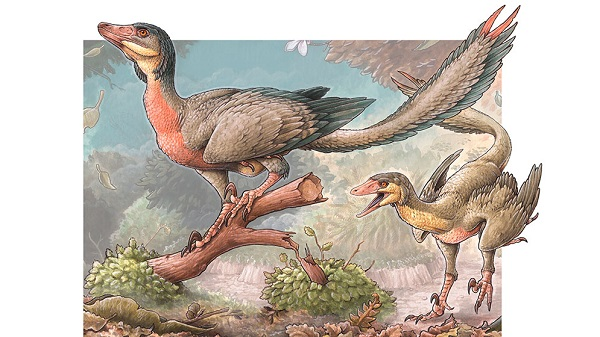

Las aves son animales vertebrados, de sangre caliente, que caminan,saltan o se mantienen solo sobre las extremidades posteriores,3 mientras que las extremidades anteriores han evolucionado hasta convertirse en a las que, al igual que muchas otras características anatómicas únicas, les permiten, en la mayoría de los casos, volar, si bien no todas vuelan. Tienen el cuerpo cubierto de plumas y, las aves sensu stricto, un pico córneo sin dientes. Para reproducirse ponen huevos que incuban hasta su eclosión. Las aves se originaron a partir de dinosaurios carnívoros bípedos del Jurásico, hace entre ciento cincuenta y doscientos millones de años y, de hecho, son los únicos dinosaurios que sobrevivieron a la extinción masiva producida al final del Mesozoico. Por tanto, la sangre caliente, que es la característica más notable que comparten con los mamíferos, es un resultado de evolución convergente, pues no hay un ancestro común a ambos grupos que tuviera este rasgo. Su evolución dio lugar, tras una fuerte radiación, a las más de diez mil especies actuales56 (más 153 extintas en tiempos históricos).6
 La evolución de las aves probablemente comenzó durante el período Jurásico, a partir de dinosaurios celurosaurios, que entre otras cosas comparten con la fauna ornítica el presentar plumas en su cuerpo y, características óseas afines. Aunque las aves definitivamente evolucionaron de los reptiles, los reptiles que dieron origen a las aves siguen siendo un misterio y motivo de discusión. Actualmente se piensa que las aves derivaron de los tecodontes, un tipo de reptil que existió hace 150 millones de años.Las evidencias fósiles y los numerosos análisis biológicos han demostrado que las aves son dinosaurios terópodos.9 Más específicamente, son miembros de Maniraptora, un grupo de terópodos que incluye también, entre otros, a dromeosaurios y oviraptóridos.10 A medida que los científicos han descubierto más terópodos no-avianos que están cercanamente relacionados con las aves, la distinción antes clara entre no-aves y aves se ha vuelto borrosa. Los recientes descubrimientos en la provincia de Liaoning del noreste de China demuestran que muchos pequeños dinosaurios terópodos tenían plumas, lo que contribuye a esta ambigüedad de límites.
La mayoría de las aves tienen un pobre sentido del olfato, pero hay excepciones notables como los kiwis,117 las aves carroñeras americanas,110118 y los albatros y petreles.119 Se ha comprobado que estos últimos son capaces de localizar a sus presas, en particular el aceite de pescado, por el olfato. El oído de las aves está bien desarrollado; aunque carece de pabellón auricular, está cubierto por plumas, y en algunas, como en los géneros de búhos Asio, Bubo y Otus, forman penachos que parecen orejas.Al contrario que los mamíferos, el oído medio de las aves iene un solo huesecillo, la columela. En el oído interno, la cóclea no es espiralada sino recta, al contrario que en los mamíferos.110122 Las papilas gustativas no se encuentran en el extremo de la lengua sino en el fondo y en la garganta; además son poco numerosas (200 en una Anatinae, frente a las 9000 en el hombre), pero otros mecanismos pueden ser accionados para la degustación, como el sentido del tacto (notable a nivel del pico) que, en muchas aves, parece intervenir durante la búsqueda de alimento.
GALERÍA DE AVES